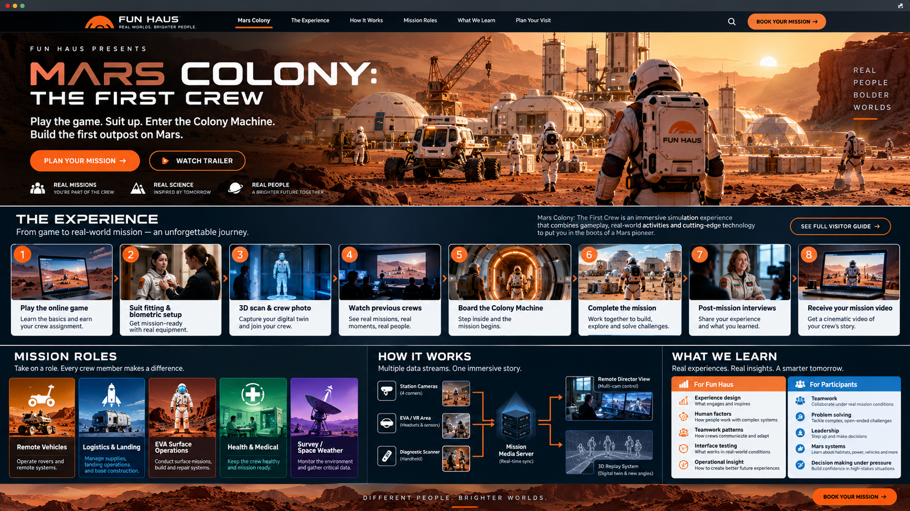

Remote Vehicles
Operate rovers and remote systems. Scout paths, move loads and report vehicle condition. Coordinate with EVA before moving near people or work areas.
Fun Haus / Design Office / Experience concept
Play the game. Suit up. Enter the Colony Machine.
Build the first outpost on Mars—together.
Five people, connected responsibilities, a mission clock, and a colony that needs every crew member. This proposed experience combines an online introduction, physical team challenges and a recorded mission story that visitors can revisit.
Follow the visitor journey ↓In design · This page describes a proposed attraction and research plan. Booking, mission recording and biometric collection are not active on this website.

01 / The visitor journey
The journey starts before arrival and continues after the crew comes home. Timing, capacity and task difficulty will be established through prototypes.
Learn the colony’s systems, try resource decisions and discover how roles depend on one another. The planned online introduction gives the physical mission a shared vocabulary. The museum’s existing Mars Scout prototype is a separate game to explore, not a completed version of this crew experience.
Meet the host, confirm the crew assignment, review accessibility needs and receive a safety and recording briefing. Explain the mission, how to pause, and separate choices for private video, research participation and public episodes.
Staff fit mission clothing and wearable sensors for heartbeat and other agreed vitals, check comfort and signal quality, and explain what each sensor records. The study design must define an alternative for visitors who decline biometric research. Sensors support a proposed learning study; they are not a medical diagnosis.
With permission, scan the fitted crew for digital avatars and check tracking calibration. Take a team portrait as the opening chapter of their mission video. Define retention and access for scans separately from the portrait.
Watch the previous team or a cleared prerecorded crew. Hosts interview participants about their goals, prior knowledge and expected strategy before they see the mission’s outcomes.
Step into the transition space. Coordinated speakers, lighting and visuals suggest launch, travel and landing. This is a simulated journey; the physical effects and accessibility options still require design and testing.
Assess the landing site, allocate supplies, establish essential systems and respond to staged faults. The crew must explain decisions and negotiate competing priorities within a defined time. Brief prompts capture reasoning without repeatedly stopping play; safety and comfort pauses take priority over the clock.
Review turning points as a crew, then interview each person separately using selected moments from the recording. Ask what information they had, why they chose an action and what they would change. Compare intentions with the sequence of events without treating a difficult moment as a personal failure.
Produce a private crew video with agreed access and retention. An edited public episode, including a possible YouTube release, requires a separate explicit opt-in and review process. Research outputs use only the data and permissions agreed in advance; public release is never automatic.
02 / Mission roles
Operate rovers and remote systems. Scout paths, move loads and report vehicle condition. Coordinate with EVA before moving near people or work areas.
Manage supplies, landing operations and base construction. Track resource budgets, choose the order of work and reconcile requests from the other stations.
Conduct surface missions, inspect equipment and build or repair systems. Share observations with the crew and verify that a repair actually clears the fault.
Monitor the crew’s simulated health and mission readiness, manage rest and respond to scenario events. Actual personal sensor readings remain available only to authorized people under the participant’s permissions.
Monitor environmental conditions, map useful sites and gather critical data. Explain uncertainty and warn the team when a changing forecast affects EVA or landing decisions.
03 / Technical design
The proposed production system combines recorded camera views, task events and a tracked digital twin. It must be tested for coverage, delay, occlusion and recovery from lost signals before visitor operations.
| Layer | Placement and behavior | What needs testing |
|---|---|---|
| Station camera pairs | Two complementary views at each of the five role stations: a face / communication view and a hands / controls / task view. Mount clear of sightlines, movement and displays. | Coverage of seated and standing visitors, readable controls, glare, audio separation and obstruction. Pairs provide complementary coverage; calibrated stereo reconstruction is a separate technical decision. |
| EVA and room cameras | Wide room views connect activity between stations. EVA area cameras cover surface tasks, props and interactions; a wearable or headset view may add the operator’s perspective where safe and consented. | Blind spots, wearable comfort, room transitions, cabling and recording indicators. Camera number and mounting height follow the physical layout survey. |
| Synchronized media server | Ingest cameras, microphones, scanner events and mission state against a shared clock. Preserve source timestamps, calibration records and permissions; record locally with monitored storage and a documented recovery plan. | Clock drift, input delay, dropped frames, storage capacity, backup and how missing segments are marked in replay. |
| Remote production | A director can monitor the multiview, mark moments and coordinate story coverage from outside the play space. Local operators retain safety control if the remote connection fails. | Network delay, talkback, role access, failover and avoiding production prompts that distort the task. |
| Tracked 3D digital twin | Map scanned avatars, tracked positions, prop states and mission events onto the virtual colony. Calibrate the physical room and digital coordinates; combine tracking with the game state rather than assuming cameras alone recover every motion. | Occlusion, tracking loss, alignment and uncertainty. Distinguish measured movement from inferred or animated motion. |
| Replay and new viewpoints | Scrub synchronized video and the 3D scene to the same event. A reconstructed viewpoint helps explain where people and equipment were; original camera footage supports review of what was actually captured. | Temporal alignment, event selection and clear labels for reconstructed views. A digital twin does not reveal thoughts or prove why a choice occurred. |
| Vitals and permissions | Keep identified biometric data in restricted storage, separate from public video. Apply participant-level access rules to live dashboards, replay overlays, exports and edits. Default public and shared-video vitals overlays to off. | Consent changes, mixed-permission crews, retention, deletion and auditing. Research access and public media release are separate permissions; agreeing to a private video does not authorize either. |
04 / Research and learning
These are questions to investigate, not completed findings. A study needs a defined protocol, participant agreement, appropriate review and a plan for handling incomplete data before collecting research measurements.
05 / Later missions
A later version could support multiple rovers with coordinated work orders, traffic priorities and shared resources. Another premise introduces a separate remote drone crew in a safe operating area, helping with construction without directly joining the colony station.
Prototype teleoperation in simulation first, including latency, bandwidth loss, conflicting commands and the handoff between local and remote operators. Physical drone use would need a defined safe environment, supervision, stop controls and an operating plan. Multi-rover and remote drone support are future scope, not available features of the first mission.